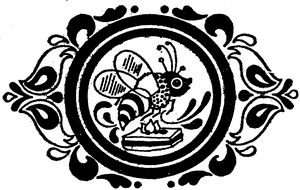

Mihai Christodorescu:
main
/
playground
/
food & wine
/ didi balmez
Calendar
Contact info
Reţete de Didi Balmez

Aperitive si gustări
Pateuri
Pateuri-Foietaje
Umpluturi pentru pateuri
Tartine
Chifle, cornuri şl franzeluţe umplut
Saleuri
Gogoşele
Alte aperitive, antreuri şi gustări
Preparate din ouă
Ouă fierte
Ouă umplute
Jumări sau scrob (românesc)
Omletă
Ochiuri
Salate
Preparate din lapte
Sosuri
Supe, borşuri, ciorbe, bulionuri, consomeuri, aspicuri
Supe
Supe de legume
Supe creme de legume şi fructe
Supe de carne
Borşuri
Reţetă pentru "umplut" borşul
Borşuri de legume
Borşuri cu carne
Ciorbe
Ciorbe de carne
Bulionuri de carne
Consomeuri
Aspicul
Preparate din orez, griş şi mălai
Preparate din orez
Preparate din griş
Preparate din mălai
Budinci şi sufleuri
Budinci
Sufleuri
Rulade
Mîncăruri de legume fără carne
Mîncăruri de cartofi fără carne
Mîncăruri de ardei fără carne
Mîncăruri de morcovi fără carne
Mîncăruri de ţelină fără carne
Mîncăruri de dovlecei fără carne
Mîncăruri de vinete fără carne
Mîncăruri de fasole fără carne
Mîncăruri de linte fără carne
Mîncăruri de mazăre fără carne
Mîncăruri de spanac fără carne
Mîncăruri de sparanghel fără carne
Mîncăruri de ştevie fără carne
Mîncăruri de roşii fără carne
Mîncăruri de conopidă fără carne
Mâncăruri de varză fără carne
Mîncăruri de gulii fără carne
Mîncăruri de praz fără carne
Mîncăruri din anghinare fără carne
Mîncăruri de urzici fără carne
Mîncăruri de ciuperci fără carne
Preparate din diferite legume asortate fără carne
Mîncăruri din fructe, fără carne
Mîncăruri din carne de pasăre
Mîncăruri din găină şi pui
Mîncăruri din curcan
Mîncăruri din gîscă
Mîncăruri din raţă
Mîncăruri din păsări vînate
Mîncăruri din fazan
Mîncăruri din sitar
Mîncăruri din prepeliţă
Mîncăruri din porumbei şi potîrnichi
Potîrnichea
Mîncăruri din gîscă si raţă sălbatică
Mîncăruri din carne de vită, porcine şi ovine
Mîncăruri din carne de vacă
Fripturi
Biftecuri
Tocături din carne de vacă
Mititei
Mîncăruri din carne de vacă cu legume
Carne de mînzat
Mîncăruri din carne de ovine
Mîncăruri din carne de miel
Mîncăruri din carne de berbec
Mîncăruri din carne de oaie
Mîncăruri, fripturi şl preparate tradiţionale din carne de porc
Cîrnaţi româneşti
Fripturi din carne de porc
Mîncăruri din carne de porc
Vînatul cu păr
Mîncăruri din iepure
Mîncăruri din căprioară
Mîncăruri din porc mistreţ
Limbă, ficat, creier, rinichi, momiţe, fudulii, inimă
Mîncăruri din limbă (bovine), porc
Mîncăruri din ficat
Mîncăruri din creier
Mîncăruri din rinichi
Mîncăruri din măduvă, momiţe, fudulii, uger, inimă
Pîinea şi pastele făinoase
Paste făinoase
Macaroane
Aluaturi si plăcinte
Aluaturi de plăcintă cu foaie groasă
Aluatul pentru foaie subţire (românească)
Plăcinte şi învîrtite
Murături şi conserve
Băuturi
Băuturi cu cafea şi slab alcoolice
Vişinată si afinate
Copyright 1998-2003 Mihai Christodorescu. All rights reserved.
Maintained by Mihai Christodorescu (
http://www.cs.wisc.edu/~mihai
).
Created: Mon Dec 21 21:12:13 PST 1998
Last modified: Fri Aug 29 15:58:53 CDT 2003